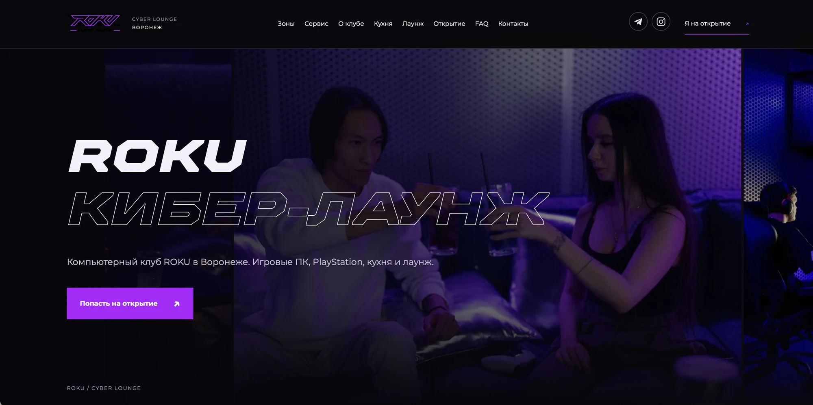
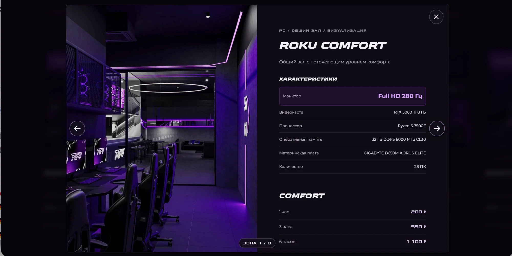

ROKU
Сайт и меню для киберлаунжа
До игры можно выбрать зал и прикинуть, сколько стоит вечер. Между катками можно открыть меню, найти что-нибудь поесть и собрать заказ. Для ROKU в Воронеже я сделал сайт и меню под оба сценария.
Моя роль: веб-дизайн, UX/UI, разработка на WordPress
Статус: сайт и меню готовы, работа над проектом продолжается.

Сначала решаем, где играть
У ROKU уже был свой стиль и я взял московский сайт за основу и собрал версию под Воронеж. По интерьеру можно поймать настроение клуба, а дальше уже решить по делу в каком зале играть и какое там железо.
Для этого я собрал фото зала, характеристики и тарифы в одной карточке. Между залами можно переключаться прямо в ней. Открыл одну зону, посмотрел какой монитор стоит и цену, листнул дальше.

Хорошая игра заслуживает хорошей еды.
В клубе меню чаще всего открываешь с телефона. Иногда уже знаешь, чего хочешь, иногда просто листаешь. Поэтому я разбил меню на еду, напитки и бар, а поиск сделал сквозным. Даже если ты листал кофе, по запросу «бургер» найдётся бургер.
В карточке блюда сразу видны фото и цена. Когда добавляешь позицию, внизу видно, сколько всего набралось и на какую сумму. Оттуда же можно открыть корзину и проверить заказ.


Как сотрудник поймёт, куда нести заказ

Под заказ и вызов сотрудника я предусмотрел QR-код для каждого игрового места или стола. Гость сканирует код, а номер места прикрепляется к обращению. Сотруднику понятно, к кому идти, даже если в зале несколько человек заказали одно и то же.
Меню можно обновлять через WordPress. Если блюдо закончилось, команда может убрать его в стоп-лист, а когда оно вернётся, снова показать гостям.
Что получилось
Сайт показывает, как устроен клуб и сколько стоит поиграть. Меню работает как отдельный интерфейс для гостя внутри клуба: с поиском, карточками блюд и корзиной. Обе части готовы, проект продолжается.